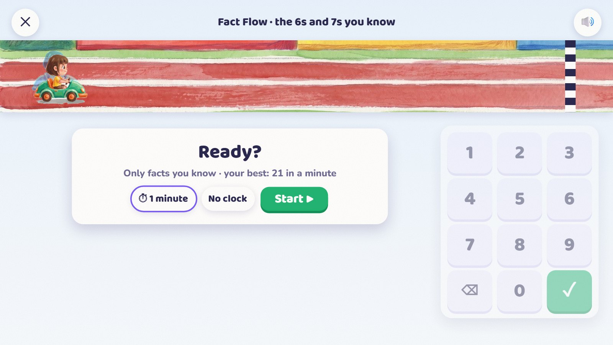
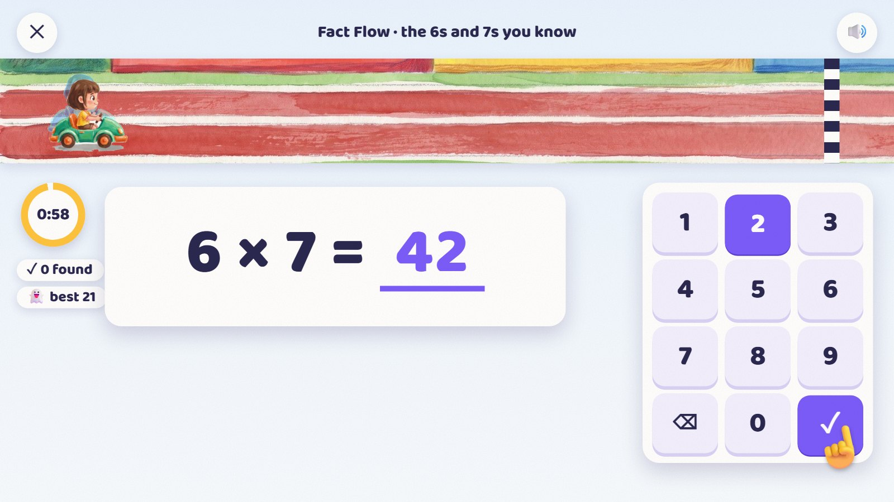
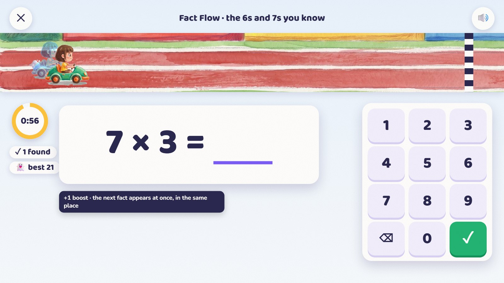
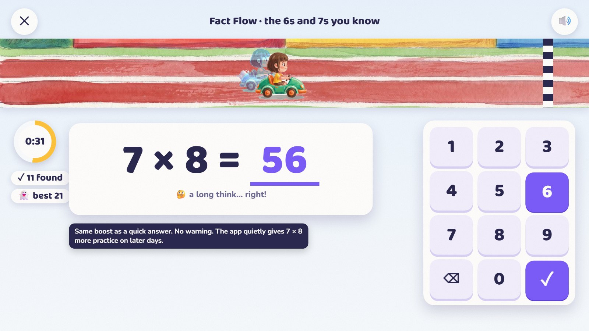
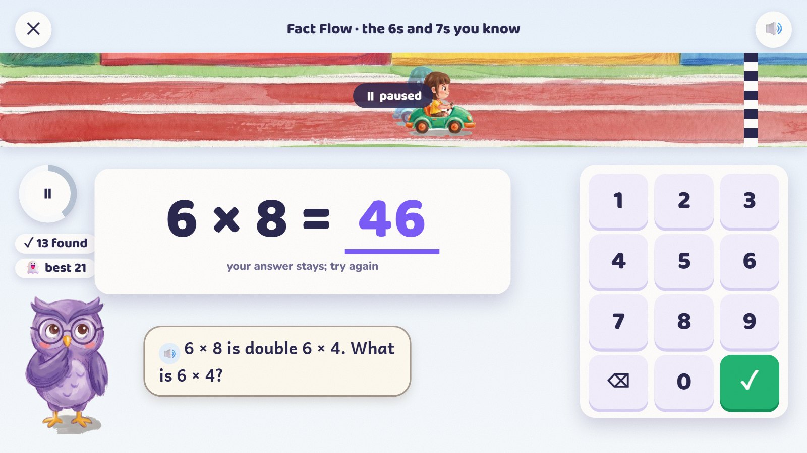
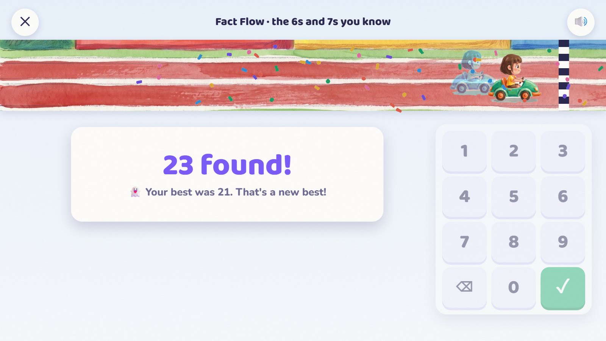
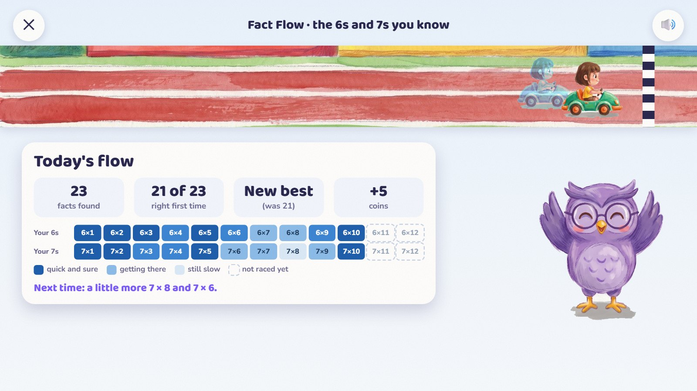
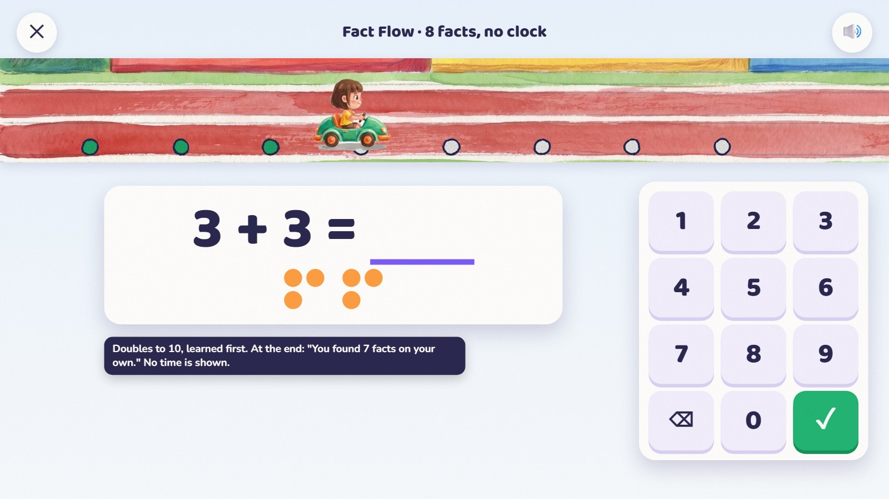

The day's road starts with a short race with number facts the child already knows, against a see-through ghost of their own best. The question stays big and still in the middle, the number pad never moves, and the race runs in a narrow strip at the top, so speed never gets in the way of the maths.

The child's kart and a see-through ghost of their own best wait on the start line. The question area and the number pad are already in place.
Only facts the child already knows race. The clock can be switched off; no clock earns the same reward.

Big in the middle: 6 × 7. The child taps 4, 2 and ✓. The pad never moves.
The ghost replays the child's best race on the same facts.

One equal boost, about a quarter of a second. The next fact is already in the same place.
Every first-try right answer is worth the same boost.

A long think, then right. The same boost. No "too slow".
Behind the scenes, 7 × 8 gets a little more practice on later days.

The typed 46 stays. The race and the clock pause; the owl gives a tip; a second try.
🔊 6 × 8 is double 6 × 4. What is 6 × 4?
After a second miss: the answer beside the attempt, the working, then a fresh twin. The missed fact comes back three facts later (or tomorrow).

Time is up. The current fact can still be finished calmly. The kart rolls in: 23 found, a new best.
Two seconds of celebration. A race with two corrections ends early and is not counted against the best.

Facts found, how many were right first time, the new best, +5 coins, and the child's own fact grid.
The grid is private, in calm blues (never red or green), and only shows speed once there are at least five answers over two days.

Eight facts, no timer, no ghost. Each right answer moves the kart to the next of eight markers; pictures help.
At the end: "You found 7 facts on your own." No time is shown.
| Rule | |
|---|---|
| Where it sits | The first stop of the day's road: a one-minute warm-up. Ages 3–4 get a quick-look game instead (how many dots, at one glance), with no race. |
| Who and how long | Ages 5–7: eight facts, no clock. Grade 2: an optional 45 seconds. Grades 3–5: an optional 60 seconds, and the untimed eight can still be chosen. |
| Which facts | Only facts the child has learned: right on the first try in at least 4 of 5 on each of two days. Bonds, + and − within 10 then 20, doubles and halves, learned times tables and division. |
| The mix | About 40% learned-but-slow facts, 40% other learned facts, 20% comfortable ones. Never untaught facts to fill a gap. |
| A miss | The typed answer stays; the race and clock pause; a 1–2 second tip; a second try. After a second miss: the answer for at least two seconds, the working, a fresh twin. |
| A missed fact again | Three facts later if the race goes on, otherwise next time. If the answer was shown, the repeat is practice: no boost and no speed record. |
| Slow answers | Accepted with the normal boost, no warning; the fact simply comes up more often later. |
| The clock | Counts only thinking and typing time. It pauses for tips, corrections, read-aloud and interruptions. |
| The ghost | The child's own best on the same facts, the same length and the same way of answering. A best only counts with at least 9 in 10 right first time. |
| No speed rank | Just "your new best" and plain results. No labels for being fast or slow. |
| The fact grid | Private, calm blues and symbols. Speed only after at least five answers over two days. Parents see first-try accuracy, help used, and changes over time. |
| Reward | 5 coins once a day, timed or not. Speed never earns stars and never blocks learning. |